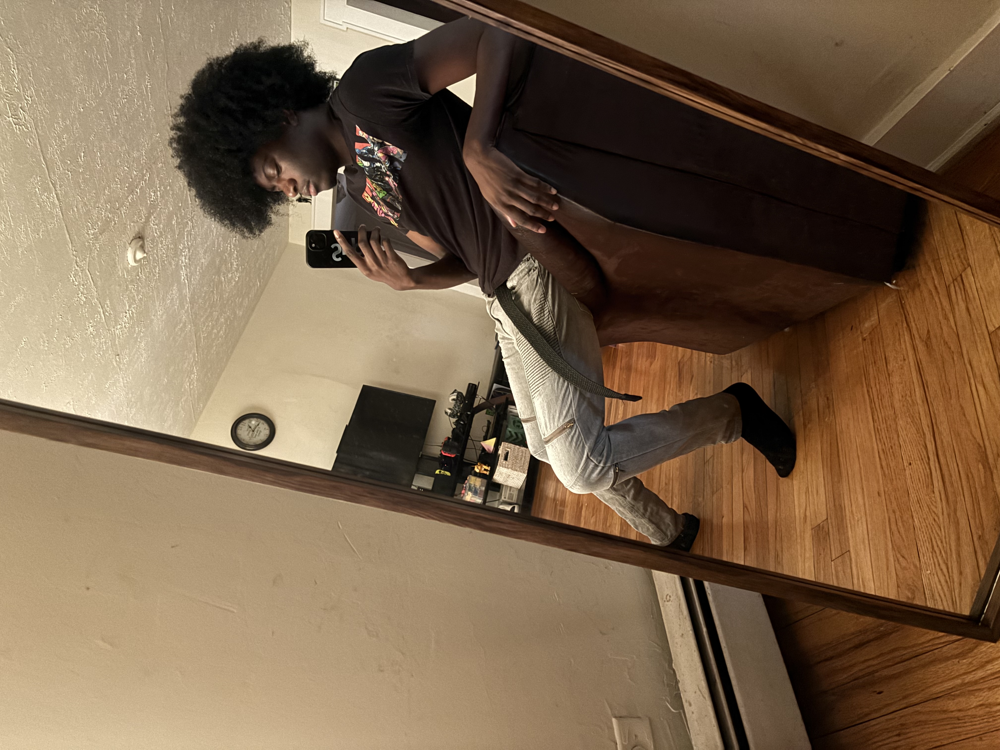

A little room to grow
Big hair.
Deep roots.
The afro is more than a shape. It is history, self-expression, and the freedom to take up space—exactly as you are.
Explore the storyAn appreciation of natural hair in all its texture, volume, and individuality.

Welcome to Afro Notes
A crown with a story.
Afros come in countless shapes and sizes. Here, we celebrate the people, history, care, and creativity behind natural hair—without one “right” way to wear it.
More than a hairstyle
Discover how the afro became a powerful symbol of identity and self-determination.
Read the story 02 / CARECare that listens
Build a gentle routine around what your own hair needs, not someone else’s rules.
Explore the basics 03 / STYLEEveryday expression
From a picked-out silhouette to protective styles, let your look be yours.
Find inspirationA reminder
“Your hair doesn’t need to be tamed. It deserves to be understood.”Start with care